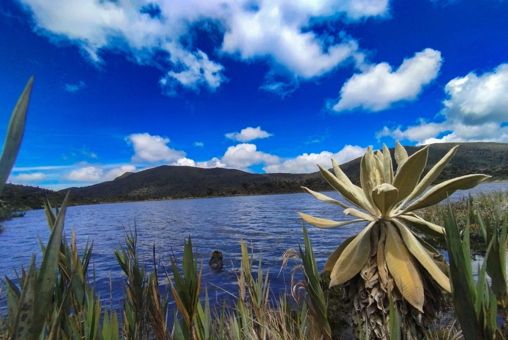
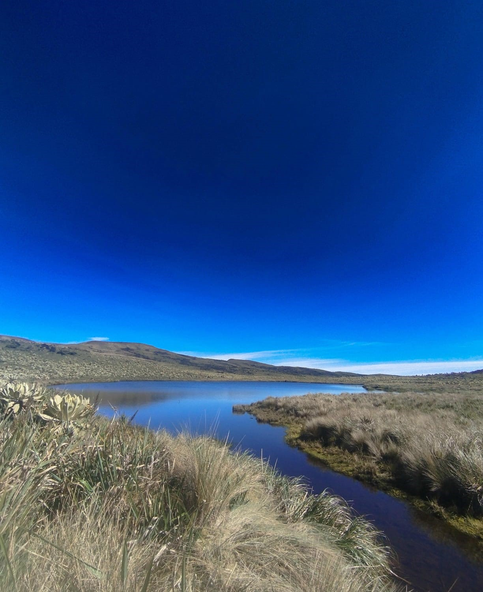
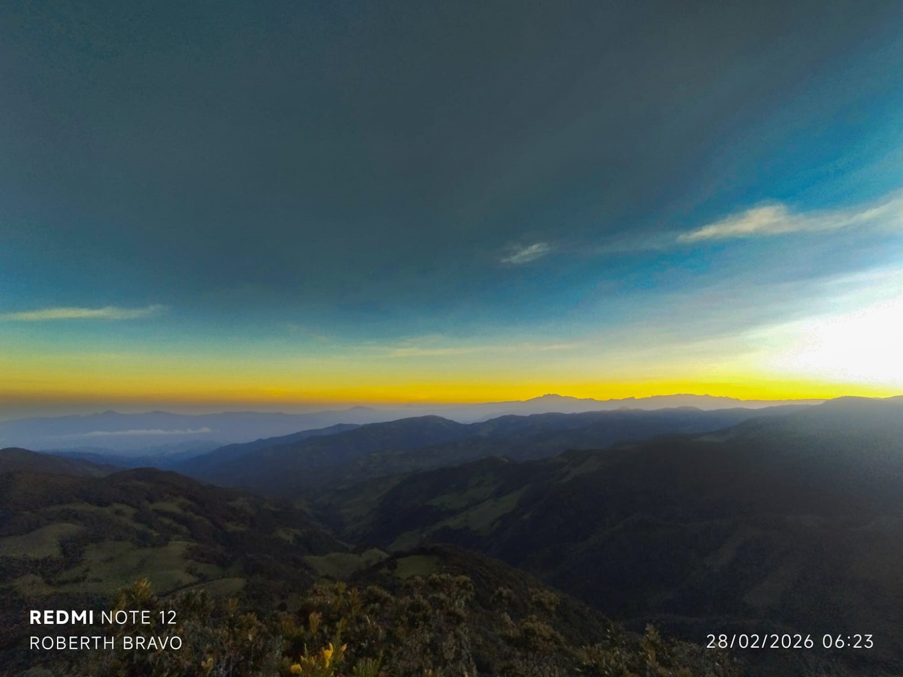
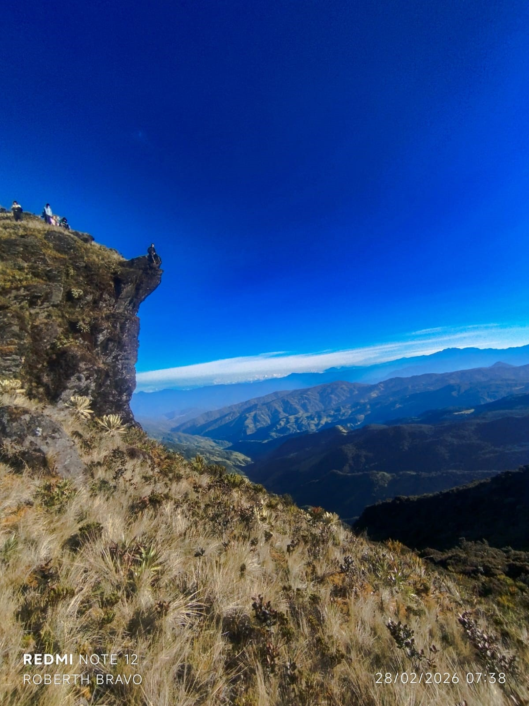
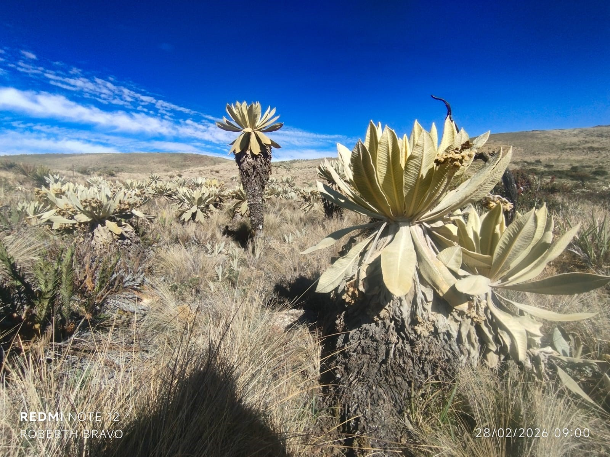

Rosal del Monte · Buesaco · 3.200 m.s.n.m.
El Páramo o Volcán Bordoncillo se encuentra en el corregimiento Rosal del Monte, municipio de Buesaco, Nariño. Forma parte del sistema montañoso andino y es uno de los ecosistemas de alta montaña más representativos del suroccidente colombiano.
La zona se sitúa entre los 3.200 y los 3.600 metros sobre el nivel del mar, con temperaturas de 4 °C a 12 °C. Un ambiente frío y húmedo que favorece una biodiversidad única, altamente adaptada a condiciones extremas de viento y radiación solar.
Desde el punto de vista geológico, el Bordoncillo posee características asociadas a antiguos procesos volcánicos. En su territorio se encuentran lagunas de origen natural —conocidas localmente como cochas— fundamentales para la conservación hídrica del ecosistema.
Su valor paisajístico lo convierte en el destino ideal para senderismo ecológico, observación de flora y fauna endémica, educación ambiental y turismo de naturaleza responsable en los Andes colombianos.





El inicio oficial es la vivienda del guía local, donde se brinda una explicación completa del trayecto, altitud, condiciones climáticas y normas ambientales del páramo.
Estacionamiento para 2 automóviles y 5 motocicletas. Vehículos de mayor altura pueden continuar hasta la vivienda del segundo guía para facilitar el acceso.
Paradas estratégicas de descanso y fotografía seleccionadas para proteger el ecosistema y disfrutar del paisaje de manera segura y responsable.
Acompañamiento completo por guías nativos conocedores del territorio, la fauna, la flora y la historia del páramo Bordoncillo en toda la ruta.
Se monitorea el clima antes de cada salida. Ante condiciones extremas se reprogramará la caminata para garantizar la seguridad de todos los participantes.
Todos los residuos generados deben retirarse del páramo. El principio de no dejar rastro es de cumplimiento obligatorio en todo el recorrido sin excepciones.
Incluye una cuota adicional que cubre alimentación uniforme para todos los participantes, promoviendo integración grupal y mejor logística durante el recorrido.
Cada visitante puede llevar bebidas personales adicionales, entregando residuos a los guías para manejo responsable dentro del ecosistema.
El participante lleva sus propios alimentos sin costo adicional. Ideal para quienes tienen requerimientos dietarios específicos o prefieren mayor independencia.
El visitante asume la responsabilidad total por sus residuos, respetando el principio de no dejar rastro en el páramo durante todo el trayecto.
Incluye la experiencia completa de senderismo interpretativo por el ecosistema de páramo, con acompañamiento de guías locales durante todo el recorrido.
Podrá apreciar lagunas de origen volcánico, frailejones y vegetación típica de alta montaña con panorámicas únicas del entorno andino.
📞 Reservar Este PlanRecorrido hasta la última laguna del sistema: La Cocha de Moras. Implica una caminata más extensa hacia zonas menos transitadas del páramo.
Recomendado para quienes desean la experiencia más completa y contemplar uno de los paisajes más conservados y hermosos del Bordoncillo.
📞 Añadir Extensión